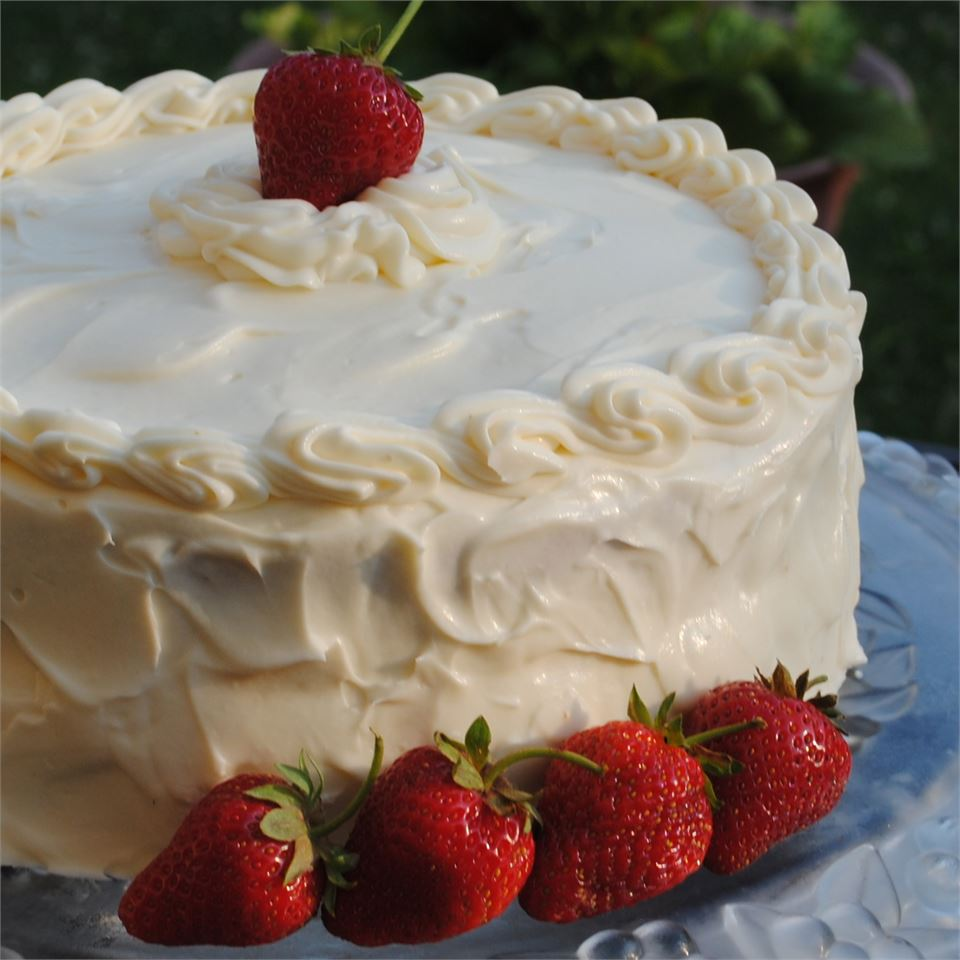

Strawberry Cake

Best Ever Strawberry Cake
This type of strawberry cake recipe with all-natural strawberry flavoring (no gelatin) is quite rare and difficult to find. This strawberry cake tastes light and fresh, never too sweet.
A truly excellent recipe that always turns out fluffy and oh-so moist. Topped with the rich and delicious cream cheese frosting, this cake is truly the best ever. It was a handwritten recipe I found in my mom's recipe book, but I assume she found it elsewhere.
Ingredients
- 1 cup pureed strawberries
- 1/4 cupt 2% milk
- 6 eggs
- 1 tablespoon vanilla extract
- 2 1/4 cups sifted cake flour
- 1 3/4 cups white sugar
- 4 teaspoons baking powder
- 1 teaspoon salt
- 3/4 cup butter, softened
- 2 packages (8 ounces) cream cheese, softened
- 2 cups confectioners' sugar
- 1 teaspoon vanilla extract
Steps
- Preheat oven to 350 degrees F (175 degrees C).
- Grease and flour two 8-inch cake pans.
- Mix pureed strawberries, milk, eggs, and 1 tablespoon vanilla extract together in a small bowl; transfer to the bowl of a stand mixer.
- Beat flour, white sugar, baking powder, and salt into strawberry mixture on Low; add butter and continue beating on Low until evenly combined.
- Stop mixer, scrape sides, and beat again for about 30 seconds.
- Divide batter evenly between the two prepared cake pans.
- Bake in the preheated oven until a toothpick inserted into the center of each cake comes out clean, about 25 minutes. Cool the cakes in the pans for about 10 minutes; transfer to wire racks to completely cool, about 30 minutes.
- Beat cream cheese and butter together in a medium bowl until smooth. Gradually beat confectioners' sugar into cream cheese mixture until creamy and fluffy; stir in 1 teaspoon vanilla extract.
- Spread about 1/2 the frosting on top of 1 cake. Place second cake on top of frosting layer; spread the remaining frosting on top of second cake and around sides of both cakes.